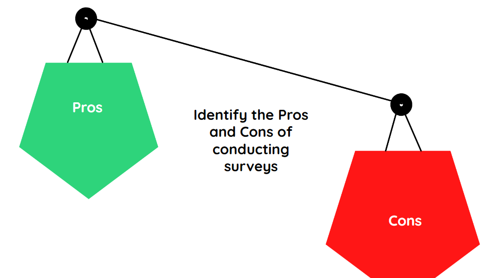

Qualitative & Quantitative Sources
|
Purpose of Lesson |
- Researchers use different methods to collect quantitative and qualitative data.
- The data collected will answer the research question.
- This lesson will explore the most common methods that you can use for your research.
|
List down all the words that you associate with “Survey,” “Experiment,” and “Observation.” |
- A survey is a quantitative research method where a set of multiple-choice questions is distributed to an entire group or sample of individuals.
- Surveys can be done online, in person, or over the phone.
- Surveys are often used to explain trends or features of large groups.
- It may also be used to plan a more in-depth study of a research topic.
- Countries routinely conduct surveys worldwide to collect and analyze data to make informed policy decisions, allocate resources, and assess national needs.

- Experiments involve variables that are controlled or manipulated to establish cause-and-effect relationships.
- Experiments are done to prove or disprove the research statement.
- Experiments are widely used in social sciences, psychology, and education.
- This is the research method used to identify a behavior or occurrence of interest and monitor it in its natural setting.
- For example, to study classroom participation, a researcher sits in one of the classes to observe students.
- The researcher will observe, count, and record the behaviors of students from different backgrounds.
Qualitative Research Methods
- The most common qualitative research methods are interviews, focus groups, ethnography, and literature reviews.
 |
 |
 |
|
Sorting
- Involves several individuals discussing a topic.
- It is used to gather opinions that can be used for further research.
- Before a company releases a new product, film, or TV show, they conduct focus groups to determine how the population would potentially react.
To get an idea of how qualitative research is conducted through focus groups, watch this clip from Impractical Jokers.
Use of Ethnography |
 |
|
Researchers participate in a community or organization for an extended period of time to closely observe culture and behavior. |
|
|
Recall: Literature Reviews |

|
A survey of published works by other authors is called a literature review. |
Multi-Select
Accordion
Deciding What Research Methods to Use
- Use quantitative research methods if you want to confirm or test something such as a theory or hypothesis.
- Use qualitative research methods if you want to understand something like concepts, thoughts, or experiences.
Analyzing Quantitative & Qualitative Data
- The next step is to interpret the data you have collected. The method of analysis differs for each type of research method.
- Quantitative data is based on numbers. Advanced statistical analysis is used to discover patterns in the data. The results are often reported in graphs and tables.
- Analyzing qualitative data is more challenging because the responses are not standard.
- It involves identifying patterns, tracking occurrences of words and phrases in the responses, and studying their context.
- There are various approaches to qualitative data analysis, but they all share five steps in common:
- Prepare and organize your data.
- Review and explore your data.
- Develop a data coding system.
- Assign codes to the data.
- Identify recurring themes.